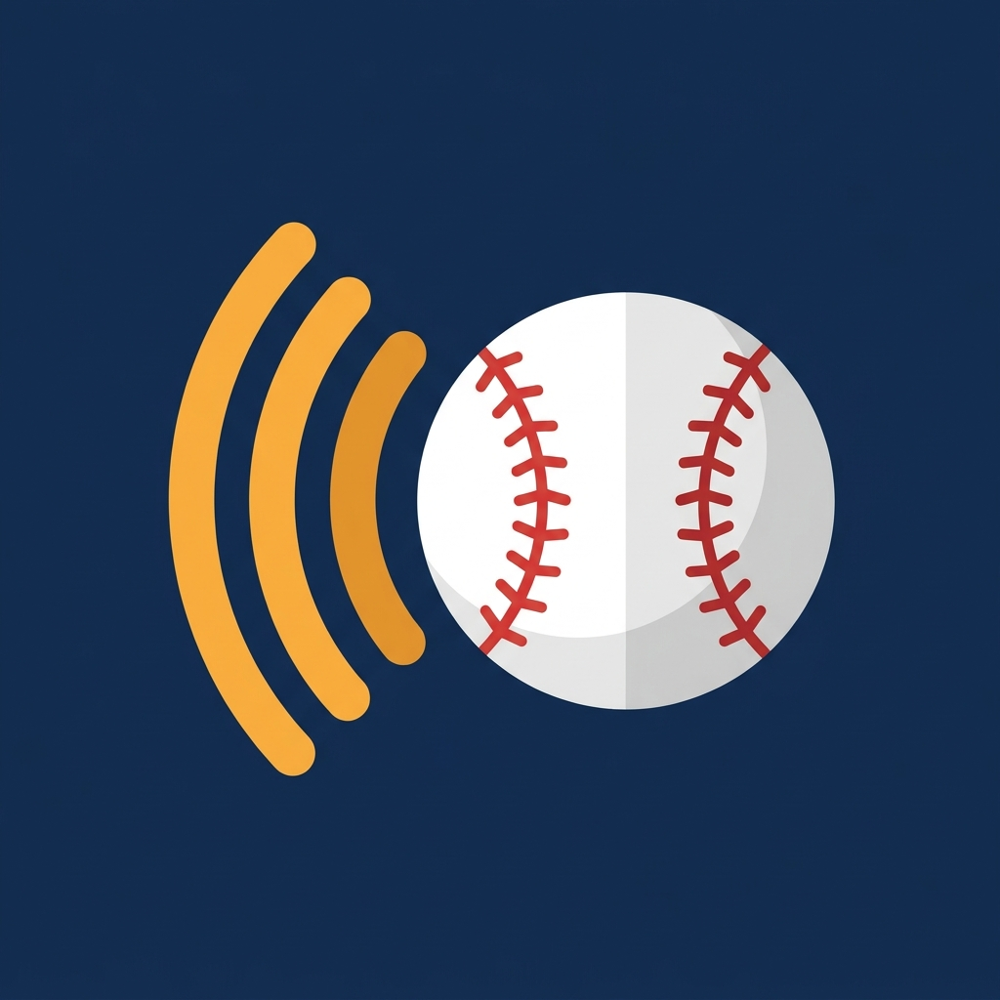

「置くだけ球速」は、iPhone を横に置いて投げるだけで、1球ごとの球速を自動で読み上げる球速測定アプリです。ミットに球が収まる「バシッ」という音で捕球を検出し、カメラの映像からボールが手を離れた瞬間を求めて球速を計算します。ボタンは押しません。
少年野球の練習で親がミットを構えながら子どもの球速を知りたいとき、部活のブルペンで1球ごとの記録を残したいとき、ネットスローや壁当てで一人で測りたいとき——投げるたびに数字が声で返ってきます。
測定・読み上げ・全距離プリセット・調整と手動計測・直近5球の表示は無料・無制限です。
Pro（買い切り）で、6球目以降の保持とセッション（練習1回分）の保存、まとめカードの共有、ポップタイム測定、選手の切り替え、週の球数・初速/平均/終速の内訳・CSV 書き出しが使えます。
ご質問・ご要望・不具合報告は、お問い合わせフォームよりお寄せください。
Set your iPhone beside the mound and pitch. The app detects the catch from the mitt pop, finds the release moment in the camera frames, and reads the speed out loud — no taps. Measuring and read-aloud are free and unlimited; saving sessions, summary cards, pop time and multiple players are a one-time Pro purchase. The app is Japanese-only.
The app collects no personal data and works fully offline. See the Privacy Policy.